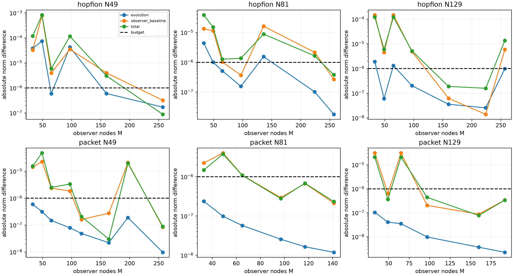

All physical states are held fixed. Native meshes are separate fixed-state strata, not a second fitted variable. No Maxwell or SF physical time integration occurred in this production activity.
{"utc": "2026-11-14T03:19:05.312473+00:00", "melbourne": "2026-11-14T14:19:05.312473+11:00"}
The budget is 1e-6 as a fractional normalized field norm for each of evolution, interpolation and total errors. Cell-Gauss order agreement is empirical; it is not a rigorous error bound. Two consecutive uniform-resolution checks and an independent midpoint rule are required for uniform-observer readiness. Prediction checks are separately labelled.
| Field | Native N | Cell reference | Uniform readiness | Fresh prediction | 33-node difference | Final uniform difference |
|---|---|---|---|---|---|---|
| hopfion | 49 | False | False | False | 0.000119448 | 3.19483e-07 |
| hopfion | 81 | True | False | False | 3.87364e-05 | 3.77668e-07 |
| hopfion | 129 | True | False | False | 0.000146688 | 1.35734e-05 |
| packet | 49 | True | False | False | 1.55181e-05 | 8.84713e-08 |
| packet | 81 | True | True | True | 2.23184e-06 | 2.32232e-07 |
| packet | 129 | True | True | False | 3.10764e-05 | 3.38412e-07 |
Measurements · Full record, fitted coefficients, residuals and chronology

Changing the observer does not improve the saved physical solution. Numerical orders, physical mesh selection, duration closure, isolated boundaries and electron/SF acceptance are outside this run. Old physical validation meshes remain inspected evidence; revised physical fits need fresh physical validation. No negative result or prior threshold is replaced.